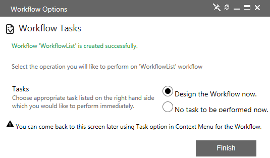
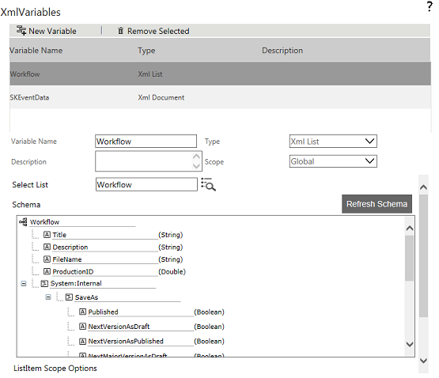
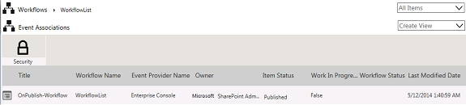

No
Creating a Workflow for a List in a Single Step
The List Workflow option in the Workflows ribbon bar helps to create and associate a workflow to a list in a single step.
To create a Workflow for a list
- Log on to the Enterprise Console and create a list.
- Click the Enterprise Console menu on the top and select Workflows from the drop-down list. The Workflows screen is displayed.
- Click New and then click List on the ribbon bar. The New List Workflow screen appears.
Enter the required details.
|
|
Field
|
Description
|
New List Workflow
|
Title
|
Enter a title of workflow for the List in this field.
|
Description
|
Enter a description for the workflow in this field.
|
Associate to List Event - This can also be done using the 'Associate' icon in the AVEVA Work Tasks Workflow List Menu.
|
List
|
Select a list ID. The List Explorer screen opens. Select the list name from the drop-down list and click Submit.
|
Event
|
Select an event from this drop-down list.
The available options are OnCreate, OnDelete, OnPublish, OnUnPublish, and OnVersionChange.
|
- Click Save & Continue. The following screen is displayed.
 - Select the required task, and then click Finish. The Process Designer screen opens.
- Following behavior is observed while using List Workflow.
- Workflow Creation
When you click Finish, a workflow is created for the selected list. You can open this workflow either by selecting Design the Workflow now from tasks or using Design Workflow in the context menu of the workflow item. - List XML Variable
An XML variable of XML List type is also created by default and the List name is used as the Variable name. To view the XML Variable, go to the workflow designer screen. Right-click the Start activity, select Activity Properties from the options and then select the XML Variables icon from the Activity Properties.

You can notice that, the variable is created with scope as Current, which means, this variable is responsible to give the information of the list item which initiates the workflow. The XML variables displayed in tree-view are the XML nodes that are mapped to the controls while creating the list.
System nodes are also created automatically for internal use. This helps you to save the list item in to another version as published or draft and also helps to save the item as folder for the list item.
- List Event Association
This workflow is associated to the list event that you have selected at the time of execution. To view the associations, select the workflow, right click and select View Associations from the options.
